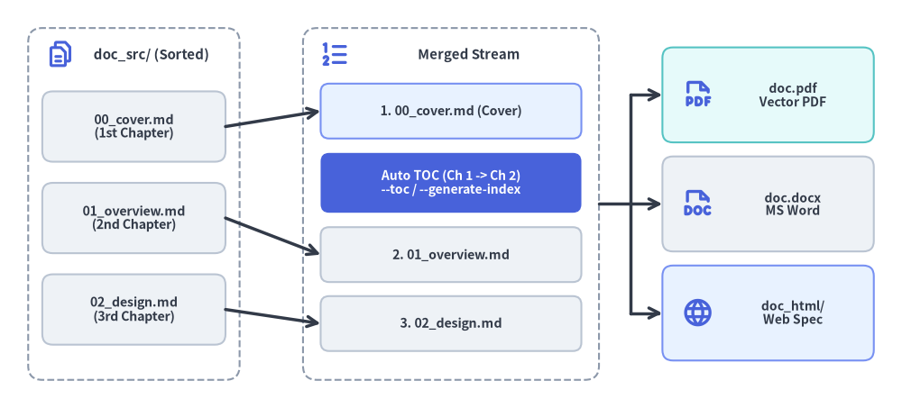
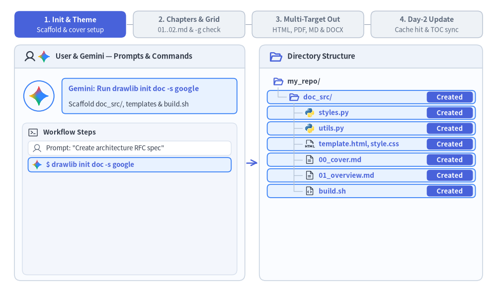

リニアドキュメントプロジェクトガイド (drawlib init doc)
doc スターターテンプレートは、仕様書、RFC（Request for Comments）、システムアーキテクチャ提案書、ホワイトペーパー、学位論文、公式エンジニアリングレポートといったリニアな技術文書の執筆向けに設計されています。
単一ページの仕様書と複数章からなるレポートを単一のアーキタイプに統合することで、同一の Markdown ソースファイル群から HTML、ベクター PDF、編集可能な MS Word（.docx）、Markdown、および単体の図解画像 を一括コンパイルできます。

Source Code
from drawlib.canvas import save, setup
from drawlib.icons import phosphor
from drawlib.lines import line
from drawlib.shapes import rectangle
from drawlib.styles import Styles
from drawlib.text import text
setup(width=128, height=58)
# Left Container: doc_src/ Lexicographical Source Chapters
rectangle((19, 29), width=30, height=50, style=Styles.MutedDashed.patch(shape_r=2.0))
phosphor.files((8.5, 50.2), width=4.2, style=Styles.PrimaryBold)
text((21.5, 50.2), "doc_src/ (Sorted)", style=Styles.DarkBold.patch(text_size=10.8))
src_chapters = [
(40.0, "00_cover.md\n(1st Chapter)"),
(27.0, "01_overview.md\n(2nd Chapter)"),
(14.0, "02_design.md\n(3rd Chapter)"),
]
for sy, label in src_chapters:
rectangle(
(19, sy),
width=26,
height=10.0,
style=Styles.Neutral.patch(shape_r=1.5),
text=label,
text_style=Styles.DarkBold.patch(text_size=10.2),
)
# Center Container: Merged Linear Document Stream (--page-break)
rectangle((64, 29), width=42, height=50, style=Styles.MutedDashed.patch(shape_r=2.0))
phosphor.list_numbers((47.5, 50.2), width=4.4, style=Styles.PrimaryBold)
text((66.5, 50.2), "Merged Stream", style=Styles.DarkBold.patch(text_size=10.8))
rectangle(
(64, 42.2),
width=37,
height=7.8,
style=Styles.PrimaryNeutral.patch(shape_r=1.2),
text="1. 00_cover.md (Cover)",
text_style=Styles.DarkBold.patch(text_size=10.2),
)
rectangle(
(64, 32.0),
width=37,
height=8.5,
style=Styles.PrimaryFlat.patch(shape_r=1.2),
text="Auto TOC (Ch 1 -> Ch 2)\n--toc / --generate-index",
text_style=Styles.WhiteBold.patch(text_size=10.0),
)
rectangle(
(64, 21.8),
width=37,
height=7.8,
style=Styles.Neutral.patch(shape_r=1.2),
text="2. 01_overview.md",
text_style=Styles.DarkBold.patch(text_size=10.2),
)
rectangle(
(64, 12.0),
width=37,
height=7.8,
style=Styles.Neutral.patch(shape_r=1.2),
text="3. 02_design.md",
text_style=Styles.DarkBold.patch(text_size=10.2),
)
# Arrows: Source -> Merged Stream
line((32, 40.0), (45.5, 42.2), arrow_head="->", style=Styles.DarkBold)
line((32, 27.0), (45.5, 21.8), arrow_head="->", style=Styles.DarkBold)
line((32, 14.0), (45.5, 12.0), arrow_head="->", style=Styles.DarkBold)
# Right: Exported Linear Deliverables
rectangle((109, 44.5), width=30, height=13.5, style=Styles.SecondaryNeutral.patch(shape_r=1.5))
phosphor.file_pdf((99.0, 44.5), width=4.6, style=Styles.PrimaryBold)
text((112.5, 44.5), "doc.pdf\nVector PDF", style=Styles.DarkBold.patch(text_size=10.0))
rectangle((109, 29.0), width=30, height=13.5, style=Styles.Neutral.patch(shape_r=1.5))
phosphor.file_doc((99.0, 29.0), width=4.6, style=Styles.PrimaryBold)
text((112.5, 29.0), "doc.docx\nMS Word", style=Styles.DarkBold.patch(text_size=10.0))
rectangle((109, 13.5), width=30, height=13.5, style=Styles.PrimaryNeutral.patch(shape_r=1.5))
phosphor.globe((99.0, 13.5), width=4.6, style=Styles.PrimaryBold)
text((112.5, 13.5), "doc_html/\nWeb Spec", style=Styles.DarkBold.patch(text_size=10.0))
# Connectors: Merged Stream -> Deliverables
line((85, 29.0), (89.5, 29.0), style=Styles.DarkBold)
line((89.5, 13.5), (89.5, 44.5), style=Styles.DarkBold)
line((89.5, 44.5), (94.0, 44.5), arrow_head="->", style=Styles.DarkBold)
line((89.5, 29.0), (94.0, 29.0), arrow_head="->", style=Styles.DarkBold)
line((89.5, 13.5), (94.0, 13.5), arrow_head="->", style=Styles.DarkBold)
save()
1. エンドツーエンドのプロジェクトワークフロー
doc プロジェクトは以下の 4 つのフェーズで進行します。すなわち、doc_src/ のスキャフォールディングと共有テーマ／表紙メタデータの設定、-g グリッドプレビューで検証しながら進める番号付き Markdown 章ファイルの執筆、マルチターゲット成果物（HTML、ベクター PDF、Markdown、および必要に応じたオンデマンドの MS Word .docx）へのコンパイル、そして .drawlib/cache.db に支えられた Day-2 の高速な差分更新です。

Source Code
from __future__ import annotations
from drawlib.anim import Animation
from drawlib.canvas import save, setup
from drawlib.icons import ai, code, devops, phosphor, workspace
from drawlib.lines import line
from drawlib.shapes import circle, rectangle
from drawlib.styles import Styles
from drawlib.text import text
W, H = 138.0, 82.0
setup(width=W, height=H)
anim = Animation(fps=10.0, loop=0)
PANE_BG = Styles.Neutral.patch(
shape_fill_color=(250, 252, 255),
shape_line_width=0,
shape_r=1.8,
)
PANE_HEADER_TOP = Styles.Neutral.patch(
shape_fill_color=(238, 243, 250),
shape_line_width=0,
shape_r=1.8,
)
PANE_HEADER_FLAT = Styles.Neutral.patch(
shape_fill_color=(238, 243, 250),
shape_line_width=0,
shape_r=0.0,
)
PANE_BORDER = Styles.Neutral.patch(
shape_fill_color=(0, 0, 0, 0),
shape_line_color=(203, 213, 225),
shape_line_width=1.2,
shape_r=1.8,
)
SUBPANEL_BG = Styles.Neutral.patch(
shape_fill_color=(243, 246, 252),
shape_line_color=(214, 223, 236),
shape_line_width=1.0,
shape_r=1.4,
)
ROW_ACTIVE = Styles.PrimaryNeutral.patch(
shape_fill_color=(232, 242, 255),
shape_line_color=(59, 130, 246),
shape_line_width=1.3,
shape_r=1.0,
)
ROW_USER = Styles.Neutral.patch(
shape_fill_color=(241, 245, 251),
shape_line_color=(51, 65, 85),
shape_line_width=1.4,
shape_r=1.0,
)
ROW_OPTIONAL = Styles.PrimaryDashed.patch(
shape_fill_color=(242, 247, 255),
shape_line_color=(59, 130, 246),
shape_line_width=1.2,
shape_r=1.0,
)
ROW_OPTIONAL_DONE = Styles.MutedDashed.patch(
shape_fill_color=(255, 255, 255),
shape_line_color=(196, 208, 224),
shape_line_width=1.0,
shape_r=1.0,
)
ROW_CACHED = Styles.PrimaryNeutral.patch(
shape_fill_color=(240, 246, 255),
shape_line_color=(147, 197, 253),
shape_line_width=1.1,
shape_r=1.0,
)
ROW_OUTPUT = Styles.SecondaryNeutral.patch(
shape_fill_color=(236, 250, 244),
shape_line_color=(34, 160, 107),
shape_line_width=1.2,
shape_r=1.0,
)
ROW_DONE = Styles.Neutral.patch(
shape_fill_color=(255, 255, 255),
shape_line_color=(218, 226, 238),
shape_line_width=1.0,
shape_r=1.0,
)
PART_ITEMS = [
("1. Init & Theme", "Scaffold & cover setup"),
("2. Chapters & Grid", "01..02.md & -g check"),
("3. Multi-Target Out", "HTML, PDF, MD & DOCX"),
("4. Day-2 Update", "Cache hit & TOC sync"),
]
def draw_step_bar(active_part: int) -> None:
"""Draw top 4-phase progress bar (active_part is 1..4)."""
pill_w = 31.0
pill_h = 7.4
gap = 2.0
start_x = 4.0 + pill_w / 2.0
cy = 75.2
for idx, (label, sublabel) in enumerate(PART_ITEMS, start=1):
cx = start_x + (idx - 1) * (pill_w + gap)
if idx > 1:
prev_cx = cx - (pill_w + gap)
line(
(prev_cx + pill_w / 2.0 + 0.2, cy),
(cx - pill_w / 2.0 - 0.2, cy),
style=Styles.PrimaryBold if idx <= active_part else Styles.MutedThin,
)
if idx == active_part:
st = Styles.PrimaryFlat.patch(shape_r=1.4)
tst = Styles.WhiteBold.patch(text_size=10.3)
sub_tst = Styles.White.patch(text_size=9.5)
elif idx < active_part:
st = Styles.PrimaryNeutral.patch(shape_r=1.4, shape_line_width=1.1)
tst = Styles.PrimaryBold.patch(text_size=10.3)
sub_tst = Styles.Primary.patch(text_size=9.5)
else:
st = Styles.Neutral.patch(shape_r=1.4, shape_line_width=1.1)
tst = Styles.MutedBold.patch(text_size=10.3)
sub_tst = Styles.Muted.patch(text_size=9.5)
rectangle((cx, cy), width=pill_w, height=pill_h, style=st)
text((cx, cy + 1.35), label, style=tst)
text((cx, cy - 1.55), sublabel, style=sub_tst)
def draw_pane_shell(cx: float, width: float) -> None:
"""Draw a rounded pane container with a top header bar."""
rectangle((cx, 36.75), width=width, height=65.5, style=PANE_BG)
rectangle((cx, 66.25), width=width, height=6.5, style=PANE_HEADER_TOP)
rectangle((cx, 64.60), width=width, height=3.2, style=PANE_HEADER_FLAT)
line(
(cx - width / 2.0, 63.0),
(cx + width / 2.0, 63.0),
style=Styles.Neutral.patch(line_color=(203, 213, 225), line_width=1.2),
)
rectangle((cx, 36.75), width=width, height=65.5, style=PANE_BORDER)
def draw_user_avatar(xy: tuple[float, float], radius: float = 4.2) -> None:
"""Draw circular User avatar badge."""
circle(
xy,
radius=radius,
style=Styles.Neutral.patch(
shape_fill_color=(241, 245, 250),
shape_line_color=(51, 65, 85),
shape_line_width=1.6,
),
)
phosphor.user(xy, width=radius * 1.25, style=Styles.DarkBold)
def draw_gemini_avatar(xy: tuple[float, float], radius: float = 4.2) -> None:
"""Draw circular Gemini AI Agent avatar badge."""
circle(
xy,
radius=radius,
style=Styles.Neutral.patch(
shape_fill_color=(248, 250, 255),
shape_line_color=(59, 130, 246),
shape_line_width=1.5,
),
)
ai.gemini(xy, width=radius * 1.42, style=Styles.Neutral)
def draw_actor_row_icon(
actor_kind: str,
xy: tuple[float, float],
*,
muted: bool = False,
) -> None:
"""Draw mini User or Gemini icon at the start of an operation row."""
if actor_kind == "user":
phosphor.user(xy, width=2.8, style=Styles.Muted if muted else Styles.DarkBold)
elif actor_kind == "user_git":
phosphor.user(xy, width=2.8, style=Styles.Muted if muted else Styles.DarkBold)
devops.git((xy[0] + 2.8, xy[1]), width=2.6, style=Styles.Neutral)
else:
ai.gemini(xy, width=2.9, style=Styles.Neutral)
def draw_tree_icon(kind: str, xy: tuple[float, float], *, muted: bool = False) -> None:
"""Draw file or folder icon in the right-side directory tree."""
if kind == "folder_open":
phosphor.folder_open(
xy,
width=3.0,
style=Styles.Muted if muted else Styles.PrimaryBold,
)
elif kind == "folder_out":
phosphor.folder(
xy,
width=3.0,
style=Styles.Muted if muted else Styles.SecondaryBold,
)
elif kind == "py":
code.python(xy, width=2.8, style=Styles.Neutral)
elif kind == "html":
phosphor.file_html(
xy,
width=2.9,
style=Styles.Muted if muted else Styles.Dark,
)
elif kind == "md":
phosphor.file_text(
xy,
width=2.9,
style=Styles.Muted if muted else Styles.Dark,
)
elif kind == "sh":
phosphor.file_code(
xy,
width=2.9,
style=Styles.Muted if muted else Styles.Dark,
)
elif kind == "globe":
phosphor.globe(
xy,
width=2.9,
style=Styles.Muted if muted else Styles.PrimaryBold,
)
elif kind == "pdf":
phosphor.file_pdf(
xy,
width=2.9,
style=Styles.Muted if muted else Styles.Danger,
)
elif kind == "word":
workspace.word(xy, width=2.8, style=Styles.Neutral)
elif kind == "grid":
phosphor.grid_four(
xy,
width=2.9,
style=Styles.Muted if muted else Styles.PrimaryBold,
)
def draw_workspace_frame(
*,
active_phase: int,
actor: str,
actor_title: str,
actor_sub: str,
actor_optional: bool,
ops: list[tuple[str, str, str]],
show_day2_note: bool,
tree_items: list[tuple[str, int, str, str]],
row_states: dict[str, tuple[str, str]],
committed: bool,
pulse_arrow: bool,
) -> None:
"""Render one frame of the 2-pane split workspace."""
draw_step_bar(active_phase)
# Left Pane
draw_pane_shell(36.0, 64.0)
phosphor.user((8.3, 66.25), width=3.4, style=Styles.DarkBold)
ai.gemini((12.2, 66.25), width=3.7, style=Styles.Neutral)
text(
(15.4, 66.25),
"User & Gemini — Prompts & Commands",
style=Styles.DarkBold.patch(text_size=10.5, halign="left"),
)
if actor == "user":
draw_user_avatar((10.8, 55.3), radius=4.2)
bubble_st = ROW_USER
title_st = Styles.DarkBold.patch(text_size=10.3, halign="left")
else:
draw_gemini_avatar((10.8, 55.3), radius=4.2)
bubble_st = ROW_OPTIONAL if actor_optional else ROW_ACTIVE
title_st = Styles.PrimaryBold.patch(text_size=10.3, halign="left")
rectangle((41.5, 55.3), width=48.6, height=9.8, style=bubble_st)
text((19.0, 57.3), actor_title, style=title_st)
text((19.0, 53.0), actor_sub, style=Styles.Dark.patch(text_size=9.7, halign="left"))
rectangle((36.0, 26.7), width=59.6, height=42.2, style=SUBPANEL_BG)
phosphor.terminal_window((9.2, 45.2), width=3.1, style=Styles.Dark)
text(
(12.0, 45.2),
"Workflow Steps",
style=Styles.DarkBold.patch(text_size=9.8, halign="left"),
)
op_ys = [40.8, 36.2, 31.6, 27.0, 22.4, 17.8, 13.2, 8.6]
for (akind, label, state), oy in zip(ops, op_ys):
is_done_like = state in {"done", "optional_done"}
if state == "active_user":
ost = ROW_USER
otxt = Styles.DarkBold.patch(text_size=9.7, halign="left")
elif state == "active_gemini":
ost = ROW_ACTIVE
otxt = Styles.PrimaryBold.patch(text_size=9.7, halign="left")
elif state == "optional":
ost = ROW_OPTIONAL
otxt = Styles.PrimaryBold.patch(text_size=9.7, halign="left")
elif state == "optional_done":
ost = ROW_OPTIONAL_DONE
otxt = Styles.Dark.patch(text_size=9.5, halign="left")
else:
ost = ROW_DONE
otxt = Styles.Dark.patch(text_size=9.5, halign="left")
rectangle((36.0, oy), width=56.4, height=4.0, style=ost)
draw_actor_row_icon(akind, (10.3, oy), muted=is_done_like)
text((15.5 if akind == "user_git" else 12.8, oy), label, style=otxt)
if state in {"optional", "optional_done"}:
opt_pill_st = (
Styles.PrimaryNeutral.patch(shape_r=0.8)
if state == "optional"
else Styles.Neutral.patch(
shape_fill_color=(244, 247, 252),
shape_line_color=(196, 208, 224),
shape_line_width=1.0,
shape_r=0.8,
)
)
opt_txt_st = (
Styles.PrimaryBold.patch(text_size=9.5)
if state == "optional"
else Styles.MutedBold.patch(text_size=9.5)
)
rectangle(
(58.6, oy),
width=10.0,
height=3.1,
style=opt_pill_st,
text="Optional",
text_style=opt_txt_st,
)
if show_day2_note:
rectangle(
(36.0, 11.4),
width=55.6,
height=7.6,
style=Styles.Neutral.patch(
shape_fill_color=(255, 255, 255),
shape_line_color=(210, 220, 234),
shape_line_width=1.0,
shape_r=1.1,
),
)
text(
(36.0, 13.2),
"1 day later — 00_cover.md & 01_overview.md untouched",
style=Styles.MutedBold.patch(text_size=9.6),
)
text(
(36.0, 9.6),
"Unchanged diagrams hit .drawlib/cache.db (<1ms)",
style=Styles.Muted.patch(text_size=9.5),
)
# Center connector arrow
line(
(68.4, 36.75),
(71.6, 36.75),
arrow_head="->",
style=(
Styles.PrimaryBold.patch(line_width=1.8)
if pulse_arrow
else Styles.MutedThin.patch(line_width=1.2)
),
)
# Right Pane
draw_pane_shell(103.0, 62.0)
phosphor.folder_open((76.6, 66.25), width=3.8, style=Styles.PrimaryBold)
text(
(79.8, 66.25),
"Directory Structure",
style=Styles.DarkBold.patch(text_size=10.6, halign="left"),
)
if committed:
rectangle((123.2, 66.25), width=17.6, height=4.4, style=ROW_OUTPUT)
devops.git((116.8, 66.25), width=2.8, style=Styles.Neutral)
text(
(119.0, 66.25),
"Committed",
style=Styles.SecondaryBold.patch(text_size=9.5, halign="left"),
)
tree_rows = [
(key, lvl, ik, lbl, 59.35 - idx * 4.35)
for idx, (key, lvl, ik, lbl) in enumerate(tree_items)
]
# Row highlight pills & status badges
for key, _lvl, _ik, _lbl, ry in tree_rows:
if key not in row_states:
continue
rstate, badge_txt = row_states[key]
if rstate in {"new", "active"}:
rst = ROW_ACTIVE
b_st = Styles.PrimaryFlat.patch(shape_r=0.8)
b_txt = Styles.WhiteBold.patch(text_size=9.5)
elif rstate == "optional":
rst = ROW_OPTIONAL
b_st = Styles.PrimaryNeutral.patch(shape_r=0.8)
b_txt = Styles.PrimaryBold.patch(text_size=9.5)
elif rstate == "cached":
rst = ROW_CACHED
b_st = Styles.PrimaryNeutral.patch(shape_r=0.8)
b_txt = Styles.PrimaryBold.patch(text_size=9.5)
elif rstate in {"output", "verified"}:
rst = ROW_OUTPUT
b_st = Styles.SecondaryFlat.patch(shape_r=0.8)
b_txt = Styles.WhiteBold.patch(text_size=9.5)
else:
rst = None
b_st = None
b_txt = None
if rst is not None:
rectangle((103.1, ry), width=57.8, height=3.68, style=rst)
if badge_txt and b_st is not None and b_txt is not None:
bw = 15.8 if len(badge_txt) >= 9 else 12.8
bx = 131.3 - bw / 2.0
rectangle(
(bx, ry),
width=bw,
height=3.05,
style=b_st,
text=badge_txt,
text_style=b_txt,
)
# Geometric tree guide lines
guide_st = Styles.MutedThin.patch(line_color=(180, 194, 212), line_width=1.0)
lvl1_ys = [ry for _k, lvl, _ik, _lb, ry in tree_rows if lvl == 1]
if lvl1_ys:
line((77.2, tree_rows[0][4] - 1.7), (77.2, min(lvl1_ys)), style=guide_st)
idx_r = 0
while idx_r < len(tree_rows):
_k, lvl, _ik, _lb, ry = tree_rows[idx_r]
if lvl == 1:
j = idx_r + 1
last_child_y = None
while j < len(tree_rows) and tree_rows[j][1] == 2:
last_child_y = tree_rows[j][4]
j += 1
if last_child_y is not None:
line((81.6, ry - 1.7), (81.6, last_child_y), style=guide_st)
idx_r = j
else:
idx_r += 1
for key, lvl, ik, lbl, ry in tree_rows:
rstate = row_states.get(key, ("normal", ""))[0]
is_muted = rstate == "muted"
if lvl == 0:
ix, lx = 77.2, 79.8
elif lvl == 1:
line((77.2, ry), (79.5, ry), style=guide_st)
ix, lx = 81.6, 84.2
else:
line((81.6, ry), (83.9, ry), style=guide_st)
ix, lx = 86.0, 88.5
draw_tree_icon(ik, (ix, ry), muted=is_muted)
if rstate in {"new", "active", "optional", "cached"}:
t_st = Styles.PrimaryBold.patch(text_size=9.8, halign="left")
elif rstate in {"output", "verified"}:
t_st = Styles.SecondaryBold.patch(text_size=9.8, halign="left")
elif is_muted:
t_st = Styles.Muted.patch(text_size=9.6, halign="left")
elif lvl <= 1:
t_st = Styles.DarkBold.patch(text_size=9.8, halign="left")
else:
t_st = Styles.Dark.patch(text_size=9.7, halign="left")
text((lx, ry), lbl, style=t_st)
TREE_STARTER = [
("root", 0, "folder_open", "my_repo/"),
("doc_src", 1, "folder_open", "doc_src/"),
("styles", 2, "py", "styles.py"),
("utils", 2, "py", "utils.py"),
("template", 2, "html", "template.html, style.css"),
("cover", 2, "md", "00_cover.md"),
("overview", 2, "md", "01_overview.md"),
("build_sh", 2, "sh", "build.sh"),
]
TREE_CHAPTERS = [
("root", 0, "folder_open", "my_repo/"),
("doc_src", 1, "folder_open", "doc_src/"),
("styles", 2, "py", "styles.py"),
("utils", 2, "py", "utils.py"),
("template", 2, "html", "template.html, style.css"),
("cover", 2, "md", "00_cover.md"),
("overview", 2, "md", "01_overview.md"),
("design", 2, "md", "02_design.md"),
("build_sh", 2, "sh", "build.sh"),
]
TREE_GRID_PREVIEW = [
*TREE_CHAPTERS,
("scratch", 1, "folder_out", ".drawlib/scratch/"),
("grid_png", 2, "grid", "grid.png"),
]
TREE_FULL = [
*TREE_CHAPTERS,
("out_html", 1, "globe", "doc_html/"),
("out_pdf", 1, "pdf", "doc.pdf"),
("out_md", 1, "folder_out", "doc_markdown/"),
("out_docx", 1, "word", "doc.docx"),
]
DURATIONS = [3.1, 3.1, 3.3] * 4
# =====================================================================
# Phase 1: 1. Init & Theme (f0, f1, f2)
# =====================================================================
with anim.frame(duration=DURATIONS[0]):
draw_workspace_frame(
active_phase=1,
actor="gemini",
actor_title="Gemini: Run drawlib init doc -s google",
actor_sub="Scaffold doc_src/, templates & build.sh",
actor_optional=False,
ops=[
("user", 'Prompt: "Create architecture RFC spec"', "done"),
("gemini", "$ drawlib init doc -s google", "active_gemini"),
],
show_day2_note=False,
tree_items=TREE_STARTER,
row_states={
"doc_src": ("new", "Created"),
"styles": ("new", "Created"),
"utils": ("new", "Created"),
"template": ("new", "Created"),
"cover": ("new", "Created"),
"overview": ("new", "Created"),
"build_sh": ("new", "Created"),
},
committed=False,
pulse_arrow=True,
)
with anim.frame(duration=DURATIONS[1]):
draw_workspace_frame(
active_phase=1,
actor="gemini",
actor_title="Gemini: Configure styles.py typography",
actor_sub="Set shared brand palette & document fonts",
actor_optional=False,
ops=[
("user", 'Prompt: "Create architecture RFC spec"', "done"),
("gemini", "$ drawlib init doc -s google", "done"),
("gemini", "Edit doc_src/styles.py & utils.py", "active_gemini"),
],
show_day2_note=False,
tree_items=TREE_STARTER,
row_states={
"styles": ("active", "Updated"),
"utils": ("active", "Updated"),
},
committed=False,
pulse_arrow=True,
)
with anim.frame(duration=DURATIONS[2]):
draw_workspace_frame(
active_phase=1,
actor="gemini",
actor_title="Gemini: Customize 00_cover.md metadata",
actor_sub="Set document title, abstract & cover hero",
actor_optional=False,
ops=[
("user", 'Prompt: "Create architecture RFC spec"', "done"),
("gemini", "$ drawlib init doc -s google", "done"),
("gemini", "Edit doc_src/styles.py & utils.py", "done"),
("gemini", "Edit doc_src/00_cover.md", "active_gemini"),
],
show_day2_note=False,
tree_items=TREE_STARTER,
row_states={
"cover": ("active", "Updated"),
},
committed=False,
pulse_arrow=True,
)
# =====================================================================
# Phase 2: 2. Chapters & Grid (f3, f4, f5)
# =====================================================================
with anim.frame(duration=DURATIONS[3]):
draw_workspace_frame(
active_phase=2,
actor="gemini",
actor_title="Gemini: Author 01_overview & 02_design",
actor_sub="Numbered chapters with ```drawlib blocks",
actor_optional=False,
ops=[
("gemini", "$ drawlib init doc -s google", "done"),
("gemini", "Edit doc_src/styles.py & 00_cover.md", "done"),
("gemini", "Write 01_overview.md & 02_design.md", "active_gemini"),
],
show_day2_note=False,
tree_items=TREE_CHAPTERS,
row_states={
"overview": ("active", "Updated"),
"design": ("new", "Created"),
},
committed=False,
pulse_arrow=True,
)
with anim.frame(duration=DURATIONS[4]):
draw_workspace_frame(
active_phase=2,
actor="gemini",
actor_title="Gemini: Stage 2 -g coordinate grid check",
actor_sub="Preview 02_design.md arch.png with grid",
actor_optional=False,
ops=[
("gemini", "$ drawlib init doc -s google", "done"),
("gemini", "Edit doc_src/styles.py & 00_cover.md", "done"),
("gemini", "Write 01_overview.md & 02_design.md", "done"),
("gemini", "$ drawlib show 02_design.md arch.png -g", "active_gemini"),
],
show_day2_note=False,
tree_items=TREE_GRID_PREVIEW,
row_states={
"design": ("active", "Preview"),
"grid_png": ("active", "Grid -g"),
},
committed=False,
pulse_arrow=True,
)
with anim.frame(duration=DURATIONS[5]):
draw_workspace_frame(
active_phase=2,
actor="gemini",
actor_title="Gemini: Verify typography & zero clipping",
actor_sub="Labels match 16px body prose; margins clean",
actor_optional=False,
ops=[
("gemini", "$ drawlib init doc -s google", "done"),
("gemini", "Edit doc_src/styles.py & 00_cover.md", "done"),
("gemini", "Write 01_overview.md & 02_design.md", "done"),
("gemini", "$ drawlib show 02_design.md arch.png -g", "done"),
("gemini", "Verify chapter diagrams & anchors", "active_gemini"),
],
show_day2_note=False,
tree_items=TREE_CHAPTERS,
row_states={
"overview": ("verified", "Verified"),
"design": ("verified", "Verified"),
},
committed=False,
pulse_arrow=True,
)
# =====================================================================
# Phase 3: 3. Multi-Target Out (f6, f7, f8)
# =====================================================================
with anim.frame(duration=DURATIONS[6]):
draw_workspace_frame(
active_phase=3,
actor="gemini",
actor_title="Gemini: Run ./doc_src/build.sh",
actor_sub="Compiles doc_html/, doc.pdf (--toc) & MD",
actor_optional=False,
ops=[
("gemini", "$ drawlib init doc -s google", "done"),
("gemini", "Write 01_overview.md & 02_design.md", "done"),
("gemini", "$ drawlib show 02_design.md arch.png -g", "done"),
("gemini", "$ ./doc_src/build.sh (HTML, PDF, MD)", "active_gemini"),
],
show_day2_note=False,
tree_items=TREE_FULL,
row_states={
"out_html": ("output", "Output"),
"out_pdf": ("output", "Output"),
"out_md": ("output", "Output"),
"out_docx": ("optional", "Optional"),
},
committed=False,
pulse_arrow=True,
)
with anim.frame(duration=DURATIONS[7]):
draw_workspace_frame(
active_phase=3,
actor="gemini",
actor_title="Gemini: On-demand MS Word (.docx) export",
actor_sub="Editable Word doc with Cover, TOC & 200 DPI",
actor_optional=True,
ops=[
("gemini", "$ drawlib init doc -s google", "done"),
("gemini", "Write 01_overview.md & 02_design.md", "done"),
("gemini", "$ drawlib show 02_design.md arch.png -g", "done"),
("gemini", "$ ./doc_src/build.sh (HTML, PDF, MD)", "done"),
("gemini", "$ drawlib build docx -o doc.docx", "optional"),
],
show_day2_note=False,
tree_items=TREE_FULL,
row_states={
"out_html": ("output", "Output"),
"out_pdf": ("output", "Output"),
"out_md": ("output", "Output"),
"out_docx": ("output", "Output"),
},
committed=False,
pulse_arrow=True,
)
with anim.frame(duration=DURATIONS[8]):
draw_workspace_frame(
active_phase=3,
actor="user",
actor_title="User: Review deliverables & git commit",
actor_sub="Source chapters & all exports committed",
actor_optional=False,
ops=[
("gemini", "$ drawlib init doc -s google", "done"),
("gemini", "Write 01_overview.md & 02_design.md", "done"),
("gemini", "$ ./doc_src/build.sh (HTML, PDF, MD)", "done"),
("gemini", "$ drawlib build docx -o doc.docx", "optional_done"),
("user_git", '$ git add . && git commit -m "Add RFC"', "active_user"),
],
show_day2_note=False,
tree_items=TREE_FULL,
row_states={},
committed=True,
pulse_arrow=False,
)
# =====================================================================
# Phase 4: 4. Day-2 Update (f9, f10, f11)
# =====================================================================
with anim.frame(duration=DURATIONS[9]):
draw_workspace_frame(
active_phase=4,
actor="user",
actor_title='1 day later — "Update 02_design.md"',
actor_sub="00_cover.md & 01_overview.md stay untouched",
actor_optional=False,
ops=[
("user", 'Prompt: "Add caching section to Ch 2"', "done"),
("gemini", "Edit doc_src/02_design.md", "active_gemini"),
],
show_day2_note=True,
tree_items=TREE_FULL,
row_states={
"styles": ("muted", ""),
"utils": ("muted", ""),
"template": ("muted", ""),
"cover": ("muted", ""),
"overview": ("muted", ""),
"design": ("active", "Modified"),
"out_html": ("muted", ""),
"out_pdf": ("muted", ""),
"out_md": ("muted", ""),
"out_docx": ("muted", ""),
},
committed=False,
pulse_arrow=True,
)
with anim.frame(duration=DURATIONS[10]):
draw_workspace_frame(
active_phase=4,
actor="gemini",
actor_title="Gemini: Incremental rebuild & TOC sync",
actor_sub="01_overview cached (<1ms); HTML & PDF update",
actor_optional=False,
ops=[
("user", 'Prompt: "Add caching section to Ch 2"', "done"),
("gemini", "Edit doc_src/02_design.md", "done"),
("gemini", "$ ./doc_src/build.sh (cache.db hit)", "active_gemini"),
],
show_day2_note=True,
tree_items=TREE_FULL,
row_states={
"styles": ("muted", ""),
"utils": ("muted", ""),
"template": ("muted", ""),
"cover": ("muted", ""),
"overview": ("cached", "Cached <1ms"),
"design": ("verified", "Rebuilt"),
"out_html": ("output", "Updated"),
"out_pdf": ("output", "Updated"),
"out_md": ("output", "Updated"),
"out_docx": ("muted", ""),
},
committed=False,
pulse_arrow=True,
)
with anim.frame(duration=DURATIONS[11]):
draw_workspace_frame(
active_phase=4,
actor="user",
actor_title="User: Verified & committed to Git",
actor_sub="Merged TOC, HTML & vector PDF stay in sync",
actor_optional=False,
ops=[
("user", 'Prompt: "Add caching section to Ch 2"', "done"),
("gemini", "Edit doc_src/02_design.md", "done"),
("gemini", "$ ./doc_src/build.sh (cache.db hit)", "done"),
("user_git", '$ git commit -am "Update Ch 2 design"', "active_user"),
],
show_day2_note=True,
tree_items=TREE_FULL,
row_states={},
committed=True,
pulse_arrow=False,
)
save()
2. プロジェクトの初期化
drawlib init を使用してリニアドキュメントプロジェクトをスキャフォールディングします。
# Scaffold standard doc project in current directory (creates 'doc_src/'):
drawlib init doc
# With custom target name, theme, and language (creates 'my_report_src/'):
drawlib init doc my_report -s google -l en
3. ディレクトリ構成と構造
編集対象のソースディレクトリ (doc_src/)
00_cover.md,01_overview.md,02_design.md, ...: 本文と埋め込みdrawlibブロックを含む番号付きの Markdown 章ファイルです。ファイル名の辞書順でソートされて結合されます。styles.py&utils.py: 共有の Python スタイル設定（Colors、Styles、言語フォント）および再利用可能な図解ヘルパー関数です。template.html&style.css: ブラウザプレビューおよびベクター PDF 生成に使用される Jinja2 シングルページ HTML レイアウトと印刷対応 CSS（@media print/@page A4）です。_assets/: 相対パスで参照される静的なロゴ画像、ラスタースクリーンショット、またはカスタム.ttfフォントを格納します。build.sh& 各種ターゲットスクリプト: マスターオーケストレーター（build.sh）と、モジュール分割された個別スクリプト（build_html.sh、build_pdf.sh、build_markdown.sh、build_image.sh、serve.sh）です。
生成される出力成果物
doc_html/: 高速なブラウザプレビューや社内 Web ホスティング向けの結合済みシングルページ HTML ドキュメント（doc_html/index.html）です。doc.pdf: ヘッドレス Chromium によってレンダリングされる印刷対応の A4 ベクター PDF です。表紙、自動目次（--toc）、章ごとの改ページ（--page-break）を備えています。doc.docx（オンデマンド生成）:drawlib build docxでエクスポートされるネイティブ編集可能な Microsoft Word ドキュメントです。表紙、目次（--generate-index）、高 DPI の PNG 図解を含みます。doc_markdown/:drawlibフェンスがレンダリング済み画像へのリンクに置換された、GitHub 表示対応の Markdown 章ファイル群です。doc_images/: 章ごとに整理して抽出されたスタンドアロンの図解画像（doc_images/<chapter>_images/）です。
注記（
docプロジェクトではnavbar.mdを作成しないこと）:doc_src/内にnavbar.mdファイルを作成しないでください。Drawlib はnavbar.mdが存在しないことを判定条件として、doc_src/をマルチページのサイドバー付きサイトではなく、結合されたリニアドキュメントとしてコンパイルします。先頭が_で始まるファイル（_outline.mdなど）およびREADME.mdは自動的にコンパイル対象から除外されます。
4. 単一ソースから得られる 5 種類の出力ターゲット
doc プロジェクトは、1 つのソースから 5 つの異なる成果物へコンパイルできます。
| 出力ターゲット | 想定読者・環境 | 主な用途 | ビルドスクリプト / コマンド |
|---|---|---|---|
doc_html/ |
Web ブラウザ | 高速なローカルプレビュー、Web 公開、社内ドキュメント Wiki | build_html.sh |
doc.pdf |
印刷・配布 | 公式ホワイトペーパー、顧客向け納品資料、目次付きの印刷用レポート | build_pdf.sh |
doc.docx |
共同編集・レビュー | ネイティブ編集可能な MS Word ドキュメント（見出し、リスト、表、シンタックスハイライト付きコードブロック、表紙＋目次、高 DPI PNG 図解） | drawlib build docx |
doc_markdown/ |
GitHub・バージョン管理 | レンダリング済み画像リンク付きでの GitHub / GitLab リポジトリ上での直接閲覧 | build_markdown.sh |
doc_images/ |
プレゼン・チャット共有 | Google スライド、Keynote、PowerPoint、Slack、PR へのドラッグ＆ドロップ貼り付け | build_image.sh |
5. 章の並び順・表紙・自動目次の仕組み
doc プロジェクトではサイドバー用の navbar.md ファイルを使用しないため、Drawlib は doc_src/ 内のすべての .md ファイル（README.md と _ 始まりのファイルを除く）を単一のリニアドキュメントに結合して doc_html/index.html、doc.pdf、doc.docx を生成します。
- 辞書順による章のソート: 章ファイルには数値プレフィックス（
00_cover.md、01_overview.md、02_design.md、03_benchmarks.md）を付与し、常に決定論的な読書順で結合されるようにします。 - 表紙の規約 (
00_cover.md): ソート順で先頭となるファイルがドキュメントの表紙として機能します。drawlib build pdfに--toc（または--generate-index）、あるいはdrawlib build docxに--generate-indexを指定すると、自動生成された目次が 1 番目のドキュメント（00_cover.md）と 2 番目のドキュメント（01_overview.md）の間 に美しく挿入されます。 - 章ごとの改ページ (
--page-break): PDF と Word（.docx）の両方のコンパイルにおいて、デフォルト（--page-break）では結合された各.mdファイルが新しいページから始まります。ファイル間で強制改ページを行わず連続配置したい場合は--no-page-breakを指定してください。
6. モジュール化されたビルドスクリプト構成
各プロジェクトには、マスターオーケストレーターとともに用途別の専用スクリプトが用意されています。
build_html.sh: Markdown の各章をコンパイル・結合し、単体の HTML ドキュメント（doc_html/index.html）を生成します。ローカルでの素早い確認に最適です。build_pdf.sh: 結合されたドキュメントをヘッドレス Chromium（page.pdf()）経由で A4 ベクター PDF にレンダリングします。自動目次（--toc）と章ごとの改ページ（--page-break）をサポートしています。build_markdown.sh: インラインのdrawlibブロックを、doc_markdown/<chapter>_images/内のレンダリング済み図解を参照する標準の Markdown 画像タグに変換します。build_image.sh: すべての Markdown ファイルを走査して埋め込みdrawlibブロックを抽出し、ファイル名の衝突を防ぎながらdoc_images/<chapter>_images/に出力します。build.sh（マスタースクリプト）: 上記のすべてのターゲットビルドを順番に実行し、リリース成果物一式を生成します。
7. 直接実行する CLI コマンド（MS Word .docx を含む）
ネイティブ MS Word（.docx）エクスポートを含む任意のビルドターゲットを、ターミナルから直接実行できます。
# 1. Compile to HTML:
drawlib build html doc_src/ -o doc_html/
# 2. Compile to PDF with Cover and Table of Contents:
drawlib build pdf doc_src/ -o doc.pdf --toc --page-break
# 3. Compile to editable MS Word (.docx) with Cover, TOC, and 200 DPI diagram PNGs:
drawlib build docx doc_src/ -o doc.docx --generate-index --page-break --dpi 200
# 4. Compile to GitHub-ready Markdown:
drawlib build markdown doc_src/ -o doc_markdown/
# 5. Extract diagram images from Markdown:
drawlib build image doc_src/ -o doc_images/
8. マルチエージェントによる章単位の並列執筆
doc プロジェクトでは章が番号付きの Markdown ファイル（00_cover.md、01_overview.md、02_architecture.md、03_security.md など）に分割されているため、AI コーディングエージェントは複数章からなるホワイトペーパーや仕様書を並列に執筆できます。
- フェーズ 1（親エージェントによる初期設定）:
doc_src/をスキャフォールディング（drawlib init doc）し、styles.py、utils.py、00_cover.mdを確定させたうえで、番号付きの章ファイル名一覧を決定します。 - フェーズ 2（サブエージェントによる並列執筆）: 個別の章（
doc_src/0N_<topic>.md）を並列サブエージェントに割り当てます。各サブエージェントは担当の章（各章 2 つ以上の図解、5〜15 行目に章のヒーロー図解を配置）を執筆し、一意なグリッドプレビューパス（-o .drawlib/scratch/0N_<diagram>_grid.png）で図解を検証します。 - フェーズ 3（統合コンパイル）: すべてのサブエージェントが章の執筆を完了した後、親エージェントが
./doc_src/build.sh（および必要に応じてdrawlib build docx）を 1 回実行し、全章をdoc_html/index.html、doc.pdf、doc.docxに統合します。